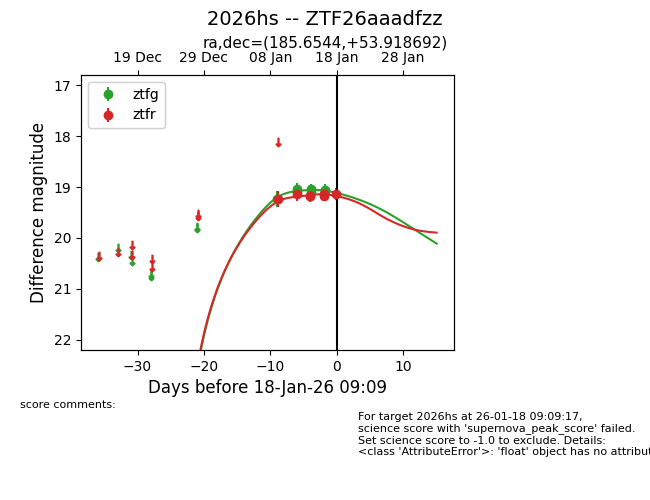
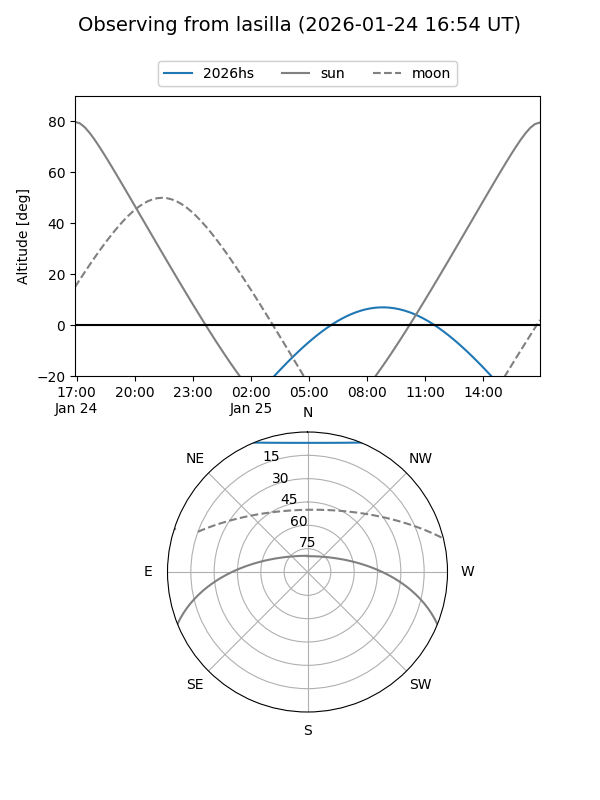
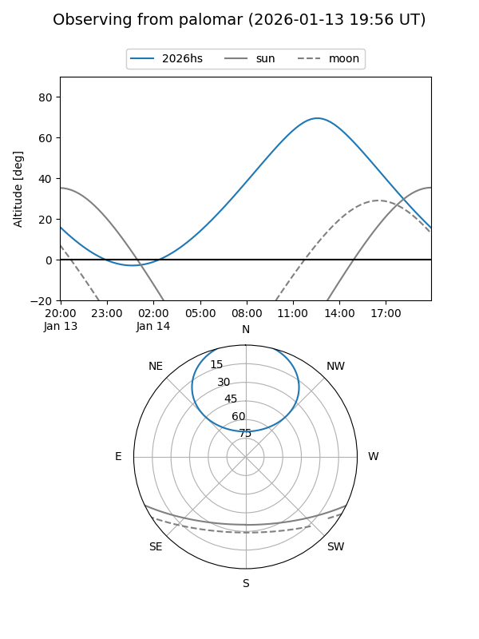
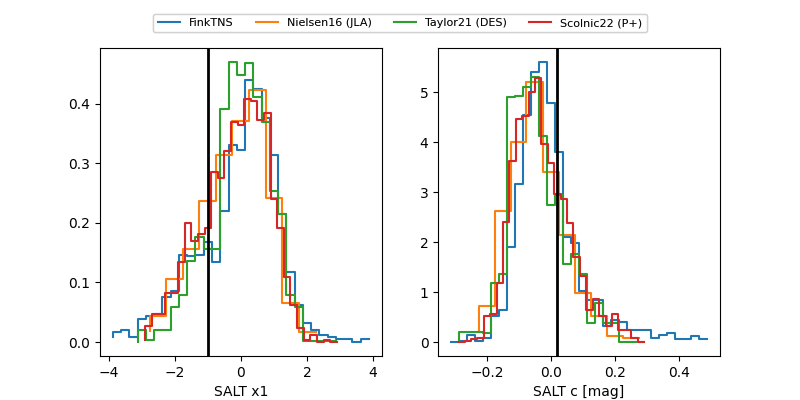

2026hs
Target 2026hs at 2026-01-16 12:05
Aliases and brokers:
FINK: link
Lasair: link
ALeRCE: link
TNS: link
YSE: link
alt names
ZTF26aaadfzz (ztf,fink_ztf)
2026hs (tns,yse)
Coordinates:
equatorial (ra, dec) = 185.6544,+53.91869
equatorial (HMS+DMS) = 12:22:37.07,+53:55:07.29
galactic (l, b) = (132.1959,+62.68814)
Flags:
Photometry:
last ztfg=19.03, ztfr=19.14
5 ztfg, 6 ztfr detections
Lightcurve

Visibility


Additional plots
